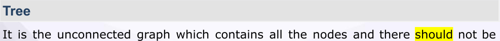
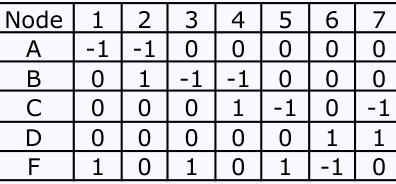
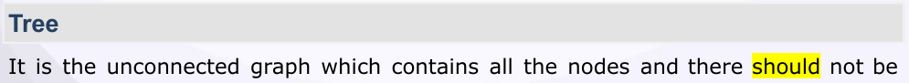
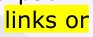

07 Graph Theory
Graph Theory
Graph : It is the representation of the circuit in which current source is made open
circuited and voltage source is made short circuited. Other circuit elements are also replaced by just a line eg.
Represent the graph of circuit – shown above.
No of Branches of network ≥Graph

Steps to find incidence matrix
(1) Assign a number to the Branches. (2) If current is incident on the node, take it 1 or 1, if current is leaving the node, then take it 1 or 1, if node is not connected to branch then put it zero.
Sign of entering and leaving should be different.
E.g:
The incidence matrix for the graph is let us Assume

Branch

| Node | 1 | 2 | 3 | 4 | 5 | 6 | 7 |
|---|---|---|---|---|---|---|---|
| A | -1 | -1 | 0 | 0 | 0 | 0 | 0 |
| B | 0 | 1 | -1 | -1 | 0 | 0 | 0 |
| C | 0 | 0 | 0 | 1 | -1 | 0 | -1 |
| D | 0 | 0 | 0 | 0 | 0 | 1 | 1 |
| F | 1 | 0 | 1 | 0 | 1 | -1 | 0 |
Properties of incidence matrix:
(1) Sum of each column must be zero (2) It is not unique. (3) Each column contain one +1 and one 1. (4) order of matrix is (node X Brances) (5) Two graph having same incidence matrix are called Isomorphic graph. (6) If we remove any of the row of incidence matrix, then it become row reduced incident matrix.


Eg

For a particular graph, there are number of trees possible. Total number of possible tree = N N – 2 Where N is number of nodes. This formula is valid if (1) Each node in the graph have at least one branch (2) All nodes are full of connection. (3) No repeated branch between nodes.
𝑇 [] Total number of possible tree = det 𝑑𝑒𝑡 𝐴 [] 𝐴 [] where A is row reduced incidence matrix. This formula is applicable for all graphs.
Total number of node pair voltages = 𝑛𝑛−1 () 2
(1) Total number of possible tie set = cut set = N N 2 (2) Rank of cut set matrix = Tree Branches = N – 1
- 1. Rank of Graph = N 1
- 2. Total Tree Branches = N 1
- 3. Total link (chords) = b –(N – 1)
- 4. A graph is said to be complete graph, if there is only one line segment between all the nodes pairs.
- 5. Degree of a node is equal to number of incoming branches.